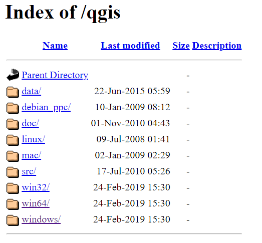
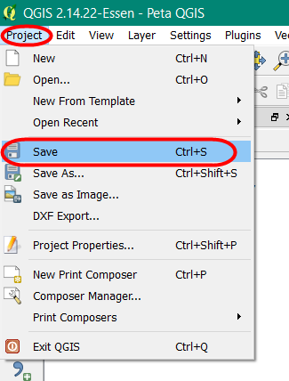

Pembuatan Peta Survei dengan Menggunakan QGIS
Download page as PDFTujuan Pembelajaran:
- Memahami cara instalasi QGIS pada komputer/laptop
- Memahami cara mengoperasikan QGIS untuk memasang plugin
- Memahami cara mengoperasikan QGIS untuk membuat peta survei
Peta survei digunakan untuk memudahkan data entry dalam pengenalan dan identifikasi lokasi saat survei lapangan. Jika Anda ingin melakukan pemetaan batas administrasi, peta survei ini dapat juga digunakan untuk menggambarkan batas administrasi terbaru yang dihasilkan dari diskusi dengan pihak kelurahan atau pemerintahan yang mengetahui batas wilayah tersebut. Pembuatan peta akan dilakukan dengan menggunakan QGIS desktop versi 2.14.22. QGIS merupakan desktop yang gratis dan terbuka, dimana semua orang dapat men-download secara gratis melalui situs https://qgis.org/.
I. Download dan Instal QGIS
- Jika Anda belum memiliki QGIS, maka Anda dapat men-download instalasi melalui web browser seperti Firefox atau Chrome.
- Pada kolom halaman di atas jendela browser, masukan tautan berikut http://qgis.org/
- Tampilan utama QGIS akan tampak seperti gambar di bawah ini:

Tampilan Halaman Situs QGIS
- Klik Download Now → All Releases → klik here pada Older releases of QGIS are available untuk mencari QGIS versi 2.14 atau Anda dapat klik tautan berikut : http://download.osgeo.org/qgis/win64/QGIS-OSGeo4W-2.14.22-1-Setup-x86.exeuntuk Windows 32 bit dan http://download.osgeo.org/qgis/win64/QGIS-OSGeo4W-2.14.22-1-Setup-x86_64.exe untuk Windows 64 bit.

Pencarian Versi QGIS
- Jika Anda tidak menggunakan Windows, pilih sistem operasi yang Anda butuhkan pada indeks QGIS.

Pemilihan sistem operasi laptop
- Ketika file instalasi telah selesai di download, jalankan dan ikuti instruksinya untuk menginstal QGIS.
II. Instalasi Plugin QuickMapServices pada QGIS
Dalam pembuatan peta survei, Anda memerlukan plugin yang akan membantu dalam menampilkan latar belakang peta untuk mengidentifikasi objek yang ada di lapangan. Plugin yang digunakan yaitu QuickMapServices, Anda dapat men-download secara gratis melalui QGIS desktop dan memerlukan jaringan internet untuk men-download. Langkah-langkah dalam menginstal plugin, yaitu:
- Buka QGIS dan pastikan laptop Anda sudah terhubung dengan koneksi internet. Klik Menu Plugins → Manage and Install Plugins

Menu Plugin
- Pada kolom Search ketikkan QuickMapServices kemudian Install Plugin

Proses Instalasi Plugin
- Jika proses instalasi plugin sudah selesai, mari lanjutkan dengan proses pembuatan peta cetak.
III. Persiapan Data
Dalam mempersiapkan data untuk pembuatan peta survei, data spasial yang diperlukan, yaitu batas administrasi. Jika Anda memiliki peta jaringan jalan yang dilengkapi dengan nama jalan dapat juga dipersiapkan dalam pembuatan peta untuk membantu dalam identifikasi lokasi di lapangan.
Langkah - langkah dalam mempersiapkan data, yaitu :
- Masukkan batas administrasi dalam ke dalam QGIS dengan klik Add Vector Layer

- Anda dapat melakukan simbologi dan labelling pada layer tersebut.
- Untuk melakukan simbologi, Anda dapat klik kanan pada layer batas administrasi → Properties → Style → Categorized. Arahkan kursor ke Column → pilih nama kolom yang berisi nama kelurahan → Classify. Jika ingin mengubah simbologi, pilih Symbol → Change.

Pengaturan simbologi
- Untuk pemberian label, klik kanan pada layer batas administrasi → Properties → Labels → Show labels for this layer → pada kolom label with pilih kolom yang berisi nama kelurahan. Anda dapat mengatur format huruf di dalam menu Text, mengatur penegasan huruf di dalam menu Buffer, mengatur penempatan huruf di dalam Menu Placement.
Pemberian Label
- Jika sudah selesai, maka hasilnya seperti gambar di bawah ini
Hasil peta lengkap dengan label
- Untuk menampilkan latar belakang citra satelit secara online, klik Menu Web → QuickMapServices → Search QMS. Plugin akan tampil pada panel di sebelah kanan, Anda dapat mengetikkan nama citra satelit yang tersedia, misalnya DigitalGlobe Imagery.

Pemilihan citra satelit
- Pada kotak dialog akan tampak beberapa citra yang sesuai dengan nama tersebut, klik DigitalGlobe Premium Imagery. Tunggu beberapa saat sampai citra tersebut tampak pada map canvas Anda.

Tampilan peta dengan citra satelit
- Simpan proyek peta Anda dengan klik Menu Project → Save → Beri nama proyek → Save. Pemberian nama proyek QGIS, misalnya Peta Survei.

Tampilan Menu Project
IV. Membuat Layout dengan Map Composer
- Untuk memulai pembuatan layout peta, pertama-tama buat composer baru di peta dengan klik Menu Project → New Print Composer. Kemudian akan muncul jendela composer kosong.

Map Layout dengan Composer di QGIS
- Pada empty composer, pertama-tama lakukan pengaturan yang terkait dengan kertas yang akan digunakan seperti ukuran kertas, orientasi, margin dan resolusi ekspor. Pengaturan dapat dilakukan di bagian Composition pada panel sebelah kanan dari composer.

Menu composition
- Tambahkan garis tepi untuk layout berupa persegi dengan tools Add shape, lalu klik, tahan dan geser untuk membuat bentuk persegi pada map layout. Anda bisa mengubah ketebalan dan warna garis pada Item Properties → Style → Change.

Pengaturan simbologi pada garis batas persegi
- Tambahkan konten peta ke dalam composer melalui tools Add new map, lalu klik, tahan dan geser untuk menambahkan peta baru. Pengaturan terkait peta yang baru ditambahkan terletak pada bagian Item Properties di sebelah kanan. Posisi dan skala konten peta dapat digeser dengan Move Item Content. Pindahkan isi peta untuk mengatur posisi dan gunakan scroll untuk mengatur skala. Skala juga dapat diubah melalui Item Properties.

Pengaturan skala peta
- Tambahkan grid peta melalui Item Properties → Grids → klik tanda + → Draw Grid. Lakukan pengaturan terhadap grid seperti tipe grid dan interval. Interval grid akan mengacu pada satuan koordinat peta. Beri tanda centang pada Draw coordinate untuk menambahkan koordinat peta di setiap garis grid.

Pengaturan grid dan koordinat peta
- Tambahkan judul peta dengan klik tools Add new label lalu klik mouse, tahan dan geser untuk menambahkan label pada composer. Satu objek label hanya dapat menggunakan satu format penulisan. Buat beberapa label jika menginginkan variasi format penulisan. Anda dapat klik Font untuk mengubah format penulisan, klik Horizontal alignment → Center untuk membuat tulisan berada di posisi tengah, dan klik Vertical alignment → Middle untuk membuat tulisan berada di posisi tengah secara tegak lurus.

Pengaturan font pada judul peta
- Tambahkan arah mata angin melalui tools Add Image → Item Properties → Search Directories. Kemudian buat kotak batasan yang menentukan lokasi dan ukuran gambar tersebut akan ditampilkan pada peta, lalu pilih gambar arah mata angin yang ingin ditambahkan ke dalam peta.

Simbol arah mata angin
- Tambahkan skala peta melalui tools Add new scalebar. Untuk membuat skala angka, ubah Style pada Main Properties menjadi numeric. Jika Anda ingin menambahkan lebih dari satu tampilan skala, dapat ditambahkan kembali dengan klik tools yang sama. Anda dapat melakukan pengaturan segments untuk mengatur jumlah baris pada skala baris.

Pengaturan skala peta
- Tambahkan sumber data dengan tools Add new label Informasi sumber data dapat diisikan dengan “DigitalGlobe Premium Imagery (www.digitalglobe.com) © Digital Globe” sebagai lisensi karena sudah menggunakannya sebagai latar belakang peta.

Lisensi citra satelit Digital Globe
- Jika peta survei sudah selesai, maka Anda dapat mengekspor peta tersebut. Klik Export as Image untuk mengekspor peta ke dalam format jpg, png, pdf, dan svg. Anda dapat memilih pengaturan resolusi gambar dengan menambahkan angka pada Export resolutions agar hasil cetak semakin bagus, pengaturan awal untuk resolusi gambar di QGIS yaitu 300 dpi. Hasil peta dengan resolusi gambar 300 dpi sudah menghasilkan kualitas gambar/peta yang cukup bagus. Kemudian peta diekspor dalam bentuk gambar untuk memudahkan dalam pencetakan.

Pengaturan resolusi peta
- Setelah proses ekspor peta selesai, hasilnya akan menjadi seperti di bawah ini

Hasil peta survei
RINGKASAN
Jika Anda dapat mengikuti dan memperhatikan seluruh tahapan dalam bab ini, Anda sudah dapat membuat peta survei sederhana yang dapat dicetak sesuai dengan ukuran kertas pada peta dengan menggunakan QGIS. Kemudian peta tersebut dapat dibagikan dan dibawa oleh data entry/surveyor ke lapangan.